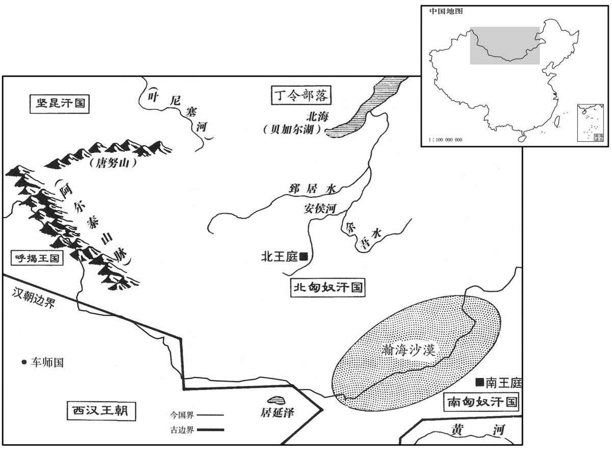

公元前54年资治通鉴：本年记事、原文与白话对照
按原书编年位置阅读；追叙和史论不等于本年发生的事件。白话采用所据译本，缺译不以生成译文补齐。
卷27 · 本年记事
公元前54年 · 汉中宗孝宣皇帝五凤四年
五凤四年〔（丁卯、前五四）〕
上传原文的注释括号有异常，字符原样保留；无法可靠划分的段落默认全文显示。
本年事件索引（现代整理）

本年形势与背景参考图
春，胥自杀。
春季，刘胥自杀。
匈奴单于称臣，遣弟右〔【章：甲十五行本无“右”字；乙十一行本同；孔本同。】〕谷蠡王入侍。〔考异曰：按匈奴传：“呼韩邪称臣，即遗铢娄渠堂入侍，”事在明年。时匈奴有三单于，不知此单于为谁也。余按通鉴据班纪而书此事，又参考匈奴传以明其异。〕以边塞亡寇，〔亡，古无字通。〕减戍卒什二。
匈奴单于向汉朝称臣，派其弟右谷蠡王到长安来充当人质。汉朝因边塞地区没有了外族入侵的战事，将屯戍兵卒减少十分之二。
大司农中丞耿寿昌奏言：“岁数丰穰，谷贱，农人少利。〔时谷石五钱，所谓谷贱伤农者。数，所角翻。少，诗沼翻。〕故事：岁漕关东谷四百万斛以给京师，用卒六万人。直籴三辅、弘农、河东、上党、太原郡谷，足供京师，可以省关东漕卒过半。”上从其计。寿昌又白：“令边郡皆筑仓，以谷贱增其贾而籴，〔【章：甲十五行本“籴”下有“以利农”三字；乙十一行本同；孔本同；张校同；退斋校同。】〕谷贵时减贾而粜，〔贾，读曰价。〔名曰常平仓。”〔常平仓始此。〕民便之。上乃下诏赐寿昌爵关内侯。
大司农中丞耿寿昌上奏说：“连续几年丰收，谷价低，农民获利少。按以往惯例，每年从函谷关以东地区运输粮食四百万斛以供应京师，需用运粮卒六万人。应从三辅、弘农、河东、上党、太原等郡购买粮食，以供应京师，可以节省函谷关以东运粮卒一半以上。”汉宣帝接受了耿寿昌的建议。耿寿昌又禀告说：“命令沿边各郡一律修建粮仓，在粮价低时加价买进，粮价高时减价售出，名为‘常平仓’。”百姓因此受益。汉宣帝于是下诏赐耿寿昌关内侯爵。
夏，四月，辛丑朔，日有食之。
夏季，四月辛丑朔（初一），出现日食。
杨恽既失爵位，家居治产业，以财自娱。其友人安定太守西河孙会宗与恽书，谏戒之，为言“大臣废退，当阖门惶惧，为可怜之意；〔师古曰：阖，闭也。为，于伪翻。〕不当治产业，通宾客，有称誉。”〔治，直之翻。〕恽，宰相子，〔恽，宰相杨敞之子也。〕有材能，少显朝廷，〔少，诗照翻。〕一朝以暗昧语言见废，〔暗，与暗同。〕内怀不服，报会宗书曰：“窃自思念，过已大矣，行已亏矣，〔行，下孟翻。〕常为农夫以没世矣，是故身率妻子，戮力耕桑，不意当复用此为讥议也！〔复，扶又翻。〕夫人情所不能止者，圣人弗禁；故君、父至尊、亲，送其终也，有时而既。〔师古曰：君至尊，父至亲。张晏曰：丧不过三年；臣见放逐，降居三月复初。师古曰：既，已也。原父曰：恽但云送终三年，本不及放逐三月也。余谓恽之此言，实因废弃而有怨望之意。〕臣之得罪，已三年矣，田家作苦，岁时伏腊，〔作苦，谓耕作劳苦也。史记：秦作伏祠，改蜡曰腊。释名曰：伏者，金气伏藏之日也。金畏火，故三伏皆庚日。历忌曰：四时代谢，皆以相生。至于立秋，以金代火。金畏火，故庚日必伏。毛晃曰：夏有三伏，冬有腊，故称岁时伏腊。〕烹羊，炮羔，〔师古曰：炮羔，炙肉也，即今所谓爊也。余按羊子曰羔，未离乳者也；其肉嫩美。炮，音步交翻。〕斗酒自劳，〔劳，音来到翻。〕酒后耳热，仰天拊缶而呼乌乌，〔应劭曰：缶，瓦器也；秦人击之节歌。师古曰：缶，即今之盆类也。李斯上秦王书云：“击瓮，叩缶，弹筝，搏髀而歌呼乌乌快耳者，真秦声也。”是关中旧有此曲。〕其诗曰：『田彼南山，芜秽不治；种一顷豆，落而为萁。〔治里曰田，音堂练翻。诗云：无田甫田。张晏曰：山高而在阳，人君之象也。芜秽不治，言朝廷之荒乱也。一顷，百亩；以喻百官也。言豆贞实之物，当在囷仓，零落在野，喻己见放弃也。萁，曲而不直，言朝臣皆谄谀也。师古曰：萁，豆茎也，音基。治，直之翻。〕人生行乐耳，〔乐，音洛。〕须富贵何时！』〔师古曰：须，待也。〕诚荒淫无度，不知其不可也。”〔师古曰：自谓为可也。〕又恽兄子安平侯谭〔恽兄忠，袭父敞爵。安平侯忠卒，谭嗣。〕谓恽曰：“侯罪薄，又有功，〔谓恽有发霍氏谋反之功也。〕且复用！”〔复，扶又翻。〕恽曰：“有功何益！县官不足为尽力。”〔为，于伪翻。〕谭曰：“县官实然。盖司隶、韩冯翊皆尽力吏也，俱坐事诛。”〔盖司隶事见上卷神爵二年。韩冯翊事见上元年。盖，古盍翻。〕会有日食之变，驺马猥佐成上书告“恽骄奢，不悔过。〔如淳曰：驺马，以给驺使乘之；佐，主猥马吏也，有史有佐，名成也。〕日食之咎，此人所致。”章下廷尉，按验，得所多会宗书，帝见而恶之。〔下，遐稼翻。予，读曰与。恶，乌路翻。〕廷尉当恽大逆无道，要斩；〔师古曰：当，谓处断其罪。要，与腰同。〕妻子徙酒泉郡；谭坐免为庶人，诸在位与恽厚善者，未央卫尉韦玄成及孙会宗等，皆免官。
杨恽失掉封爵、官位后，住在家里治理产业，用财富自我娱乐。杨恽的朋友安定太守西河人孙会宗写信劝戒他说：“大臣被罢黜贬谪之后，应当闭门在家，惶恐不安，以示可怜之意。不应治理产业，交结宾客，享有声誉。”杨恽为丞相杨敞之子，很有才干，年轻时就在朝廷中崭露头角，一时受到暖昧语言的中伤，遭到罢黜，内心不服，给孙会宗回信说：“我暗自思量，自己的崐过错已太大了，行为已有亏欠，将长久做一名农夫度过一生，所以率领妻子儿女，致力于农桑之事，想不到又因此受人讥评！人情所不能克制的事，连圣人都不加禁止。所以即使是至尊无上的君王，至亲无比的父亲，为他们送终，也有一定的时限。我得罪皇上，已三年了，农家劳作辛苦，每年伏日、腊月，煮羊炖羔，用酒一斗，自我犒劳，酒后耳热，仰面朝天，敲着瓦盆，放声吟唱，诗中写道：‘南山种田，荒芜杂乱，种一顷豆，落地成秧。人生不过及时乐，等待富贵何时来！’就算是荒淫无度，我不知不可以如此。”再有，杨恽兄长的儿子安平侯杨谭对杨恽说：“你的罪并不大，又曾于国有功，将会再次被任用。”杨恽说：“有功又有什么用！不值得为皇上尽力！”杨谭说：“皇上确实如此。司隶校尉盖宽饶、左冯翊韩延寿都是尽力的官吏，都因事被诛杀。”正巧出现日食，一个名叫成的马夫头上书控告杨恽说：“杨恽骄傲奢侈，不思悔过。这次出现日食，就是因为杨恽的关系。”奏章交给廷尉，经过核查，发现了杨恽写给孙会宗的信，汉宣帝看了以后，对杨恽深恶痛绝。廷尉判处杨恽大逆不道之罪，腰斩；妻、儿放逐酒泉郡；杨谭受其牵连，也被贬为平民；几位与杨恽关系友善的在职官员，如未央卫尉韦玄成和孙会宗等，都被罢免官职。
史家评论 · 原文及其白话
臣光曰：以孝宣之明，魏相、丙吉为丞相，于定国为廷尉，而赵、盖、韩、杨之死皆不厌众心，〔厌，于赡翻，满也。〔【章：甲十五行本“心”下有“惜哉”二字；乙十一行本同；孔本同；张校同；退斋校同。】〕其为善政之累大矣！〔累，力瑞翻。〕周官司寇之法，有议贤、议能，〔周官：小司寇之职，以八辟丽邦法，附刑罚，三曰议贤之辟，四曰议能之辟。郑玄注曰：贤，谓有德行者。能，谓有道艺者。郑众曰：若今时廉吏有罪先请，是也。〕若广汉、延寿之治民，可不谓能乎！〔治，直之翻。〕宽饶、恽之刚直，可不谓贤乎！然则虽有死罪，犹将宥之，况罪不足以死乎！扬子以韩冯翊之愬萧为臣之自失。〔扬子：或问臣之自失，曰：韩冯翊之愬萧，赵京兆之犯魏。〕夫所以使延寿犯上者，望之激之也。上不之察，而延寿独蒙其辜，不亦甚哉！
臣司马光曰：以汉宣帝的英明，加上魏相、丙吉当丞相，于定国当廷尉，而赵广汉、盖宽饶、韩延寿、杨恽的被杀都不能使众人心服，这实在是汉宣帝善政的最大污点！《周官》上关于司寇职责的规定，有“议贤”、“议能”，象赵广汉、韩延寿在治理百姓方面，能不说他们有才能吗！而盖宽饶、杨恽刚强正直，能不说他们贤明吗！既然这样，那么即使真有死罪，仍应宽恕，何况罪不至死呢！扬雄认为，韩延寿诽谤萧望之是自取其祸。但韩延寿之所以冒犯上官，则是因萧望之的逼迫。汉宣帝不察究竟，使韩延寿独受其辜，不是太过分了吗！
匈奴闰振单于率其众东击郅支单于。郅支与战，杀之，并其兵；遂进攻呼韩邪。呼韩邪兵败走，郅支都单于庭。〔郅支忘呼韩邪树立之恩，以兄弟而寻干戈，为汉所诛，宜矣。〕
匈奴闰振单于率领军队向东进攻郅支单于。郅支单于与其交战，杀死闰振单于，兼并了闰振单于的军队，于是进攻呼韩邪单于。呼韩邪单于兵败退走，郅支单于建都单于王庭。